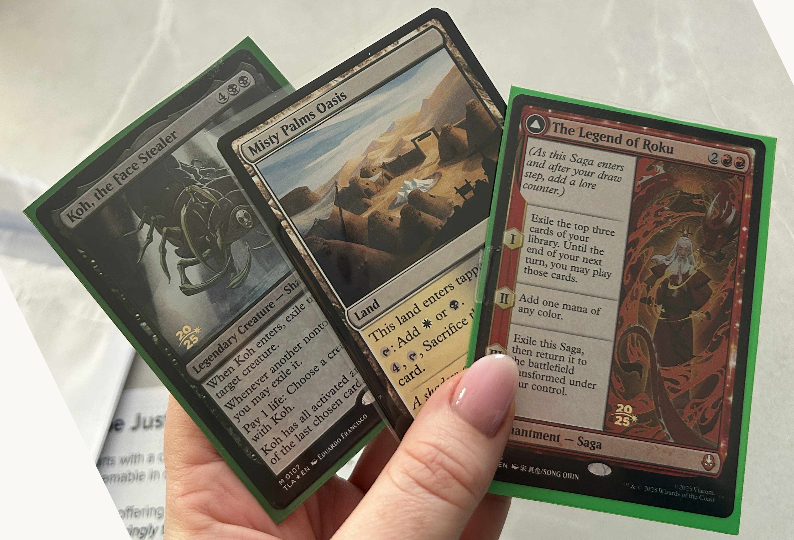

LTB Prerelease
I've been rather silent on my online singles acquisitions since my flurry of promo purchases late last year. I mentioned back in January that I had purchased a few items on Cardmarket, including a foil WPN Gran-Gran promo. Well, one month later and Gran-Gran has finally landed. Nobody warned me that collecting singles via unregistered snail mail would require so much patience.
In any case, I figured it was time for an update.
Walmart Aang is no longer stateside, having arrived last week while I was away from home trading for singles. The Spotlight Series participation promo (Day of Black Sun non-foil) also arrived the same day. With the arrival of this WPN Premium Gran-Gran today, my collection of miscellaneous Avatar promos in all treatments is now complete.
My focus has now turned completely to the Sisyphean task of completing the full 80-card set of PTLA prerelease stamp promos. Avatar UB is actually the last MTG set to include date-stamped promos, with WotC no longer including a stamped foil rare/mythic in prerelease kits starting with 2026's Lorwyn Eclipsed. The yearly stamps featured in the Avatar UB set were introduced in 2021, but prerelease promos have existed in some form since 1997.
Including the five prerelease cards I pulled myself, I am now sitting on 18 out of 80. I am trying to use Cardmarket's Shopping Wizard to consolidate shipping as much as possible, but these cards are proving extremely tricky to source. I have started acquiring these in small batches as cashflow allows, to give the market time to breathe and avoid overpaying for instant completion. Not that I could instantly complete this set even if I wanted to—some prereleases currently have zero listings. Cresting that hill will be a true test of patience.
I've targeted a mix of well-priced mythics (particularly the Sagas) and dirt-cheap rares.


The promo hunt continues, though I suspect the prerelease set will be a slow one to finish.